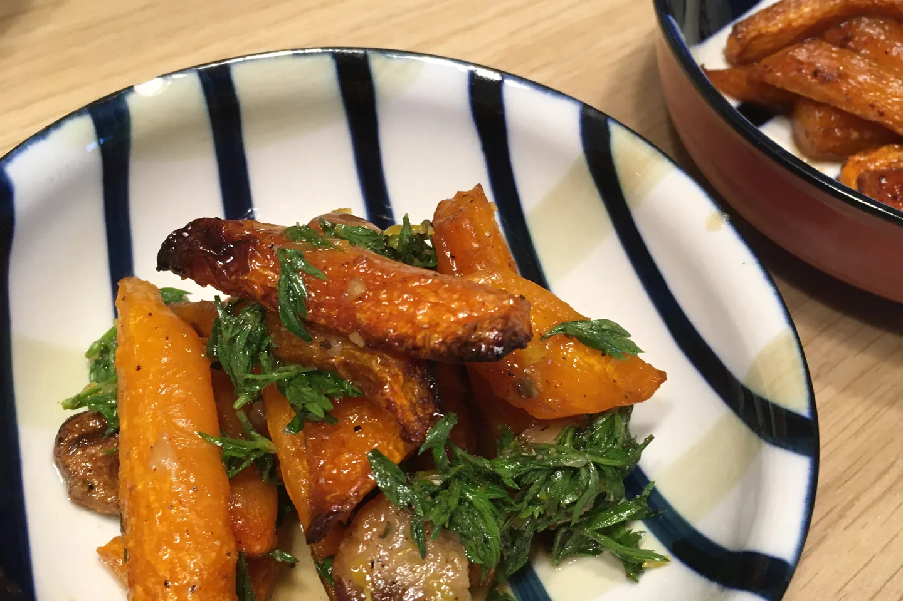
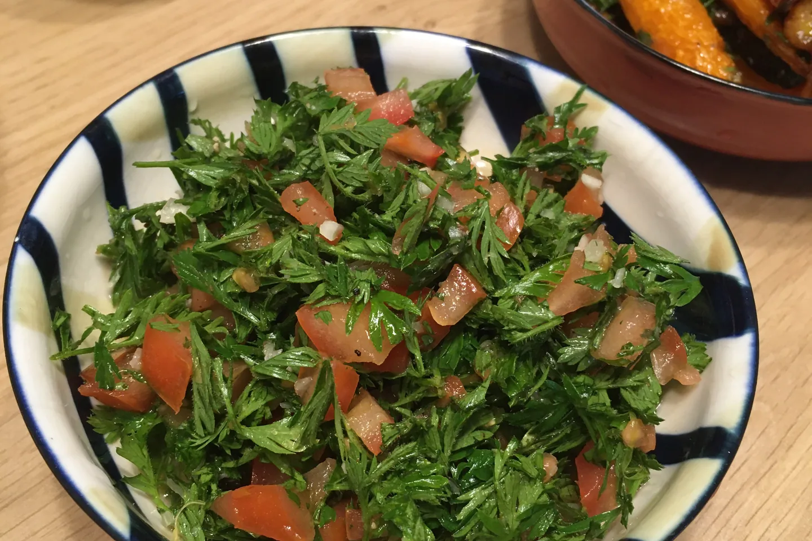
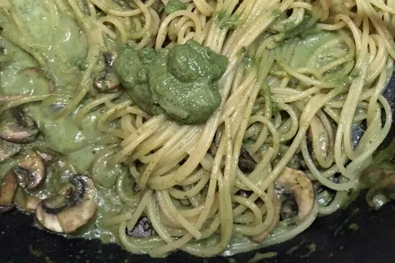
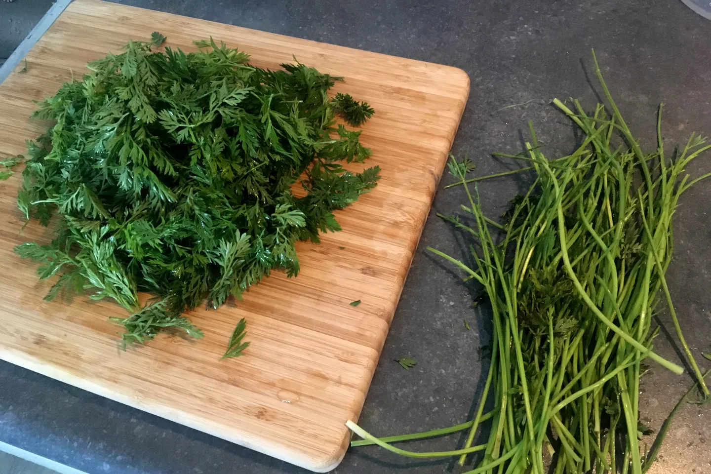

日常記事｜紅蘿蔔葉再利用料理
本次的料理目標是「好吃！而且讓人可以輕易地接受這綠葉的味道」，不只是做出一道菜、得意自己的零剩食好棒棒，也把一同用餐的家人們的不同飲食偏好放在心上。
之一：作為調味，與烤紅蘿蔔一起
「烤紅蘿蔔」是很常見西式配菜(side dish)，2:2:1的巴薩米克醋、蜂蜜及橄欖油，再加上適量鹽巴與胡椒拌勻，200度烘烤30-40分鐘，期間可以觀察並將蘿蔔翻面，重點在於表皮焦化。調味料份量及烘烤時間分別視紅蘿蔔量及尺寸而定，我喜歡紅蘿蔔鬆軟、叉子可以輕易穿過的程度。家人覺得吃起來像蜜地瓜！
而加入紅蘿蔔葉的作法呢，是參考NOT ANOTHER COOKING SHOW做的變奏版。紅蘿蔔先與橄欖油、蒜頭（含皮）、百里香、鹽巴、胡椒拌勻烘烤。接下來將2:2:1的橄欖油、檸檬汁、蜂蜜，加上適量碎檸檬皮、碎胡蘿蔔葉（不要莖部）、巴西里、鹽巴、胡椒混合，淋上出爐的紅蘿蔔即完成。
和前一道相比，這一道比較像開胃菜(appetizer)的類型，更加有個性而不親切。以綠葉及檸檬為基調的清爽味道，彷彿只有大人才能欣賞，相信作為配角之一的紅蘿蔔葉能夠輕易地被大人們所接受。

之二：紅蘿蔔葉沙拉 （失敗）
來自Youtube隨便搜尋的食譜：切碎蘿蔔葉（不要莖部）、番茄及蒜頭，加入鹽巴、胡椒、檸檬及橘子汁拌勻（柑橘類皆可），就可以輕鬆上菜的生菜沙拉！
首先，蒜末太辣，無論如何務必移除這個食材。其他部分都非常單純，基本上是一個檸檬/橙汁基調的沙拉，毫不遮掩蘿蔔葉的味道，不喜歡「草味」的人們就會在這道沙拉面前倒退三步。而我認為大部分的人大概都無法接受……
個人認為沙拉就是個展現食物原味的料理，作為凡人的我沒有能力做出沒有食物原味的沙拉（怎感覺這麼做也有點本末倒置？），能夠享受並願意嘗試各種不同「草味」的人們可以做做看，相信能夠帶來不同的生菜體驗，畢竟平常沒什麼機會吃到紅蘿蔔葉啊。

之三：青醬，榮登最佳消耗招式
參考食譜來自LOVE&LEMONS，除了經典的羅勒葉、松子之外，提供了很多青醬基底食材的替代方案，包含各種菜葉和堅果，很實用的一篇文章。
個人加了紅蘿蔔葉、橄欖油（因為果汁機打不動所以加了不少）、蒜末、腰果和杏仁，紅蘿蔔葉在青醬中並不突兀，或許多少受其他食材弱化了氣味。嘗試當沙拉醬拌入沙拉，但感覺沒加分也沒減分，有點無聊。
幾經嘗試後，較推薦加熱食用。加熱後，蒜頭的味道會明顯浮現、成為要角，作為法棍麵包切片的抹醬很適合（我還會再加一點奶油，超肥但很爽），作為義大利麵青醬更是完全沒有問題，與經典羅勒葉青醬相比可說是以假亂真，絕對是消耗紅蘿蔔葉的首選！


寫在之後
- 查了食譜、開始做了之後，才發現大多只使用葉子、仍然不使用莖。
- 本文實踐於荷蘭。得意洋洋地記錄完後，才想到台灣買的紅蘿蔔通常不帶葉子（不曉得是不是因為是進口的，還是因為收成後的慣例？），且品種不同、莖葉較粗，就交給有志之士實踐在台灣紅蘿蔔上了XD!
留言
電子郵件不會公開，只用來辨識留言者。第一次留言會先經過審核，之後同一個電子郵件的留言會直接顯示。本留言區以 Cloudflare Turnstile 防止垃圾留言。